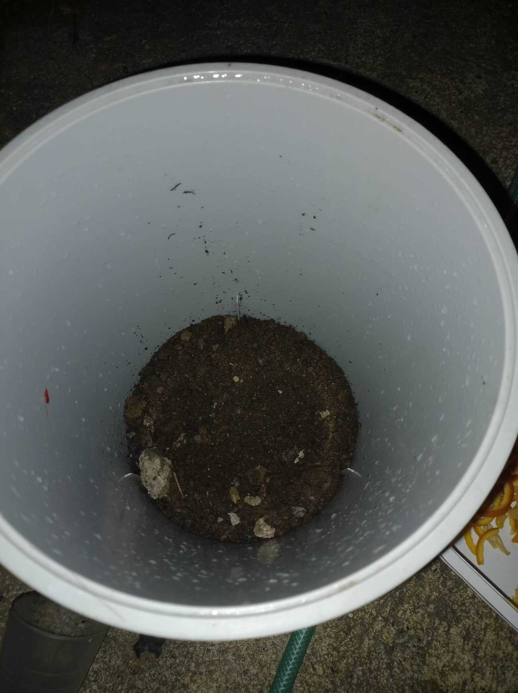
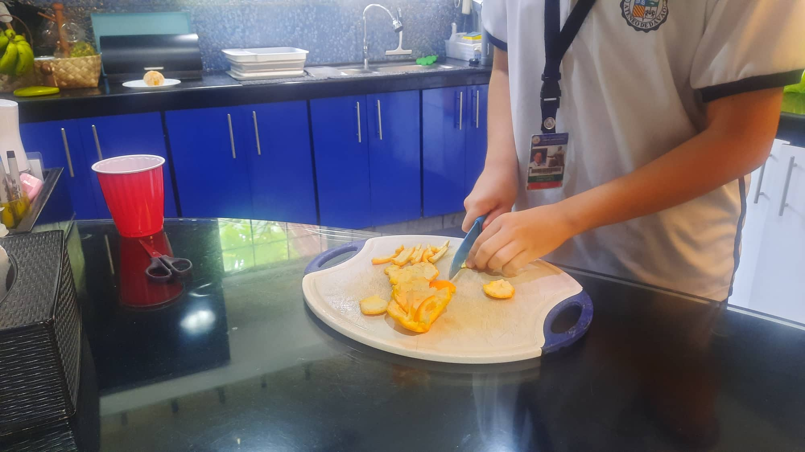
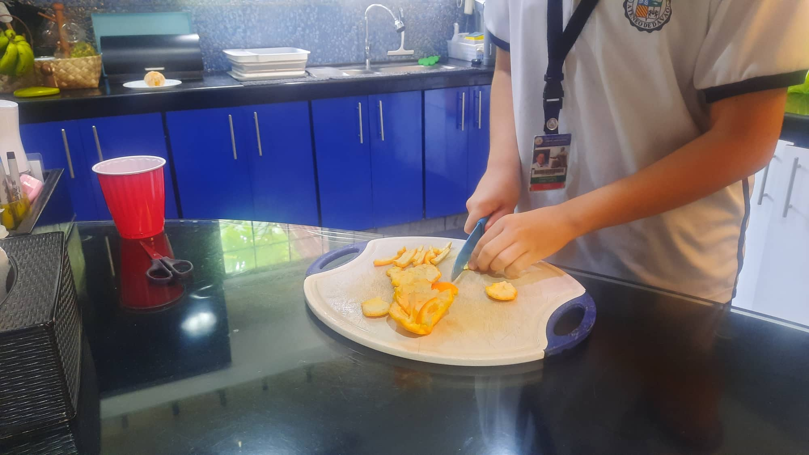
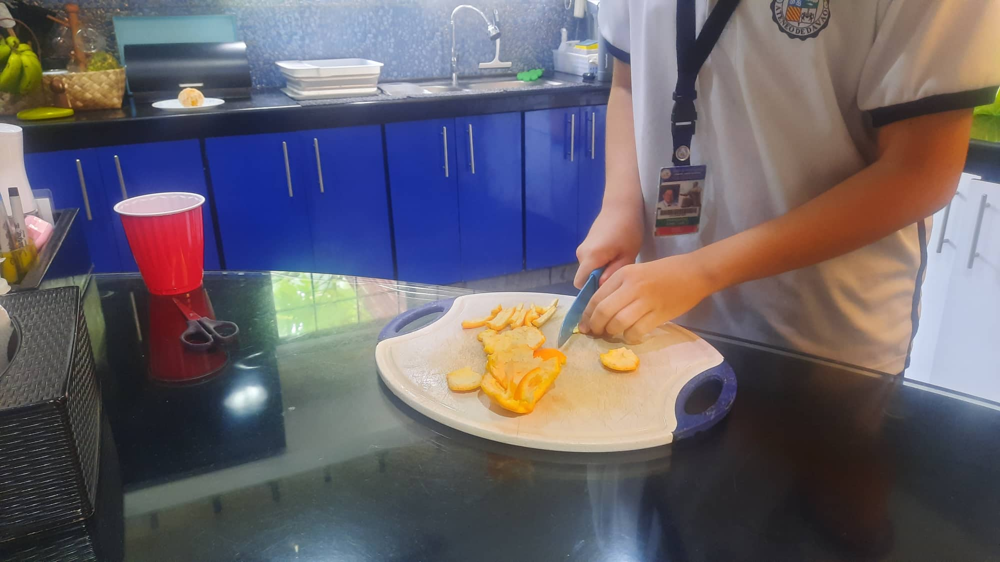

Visual Documentation
Braille Lavoiser Baril
Zoe Andrea Macarulay

John Carlo Fernando
 

Maria Kathrina Montero


Composting is the purposeful decomposition of items such as food scraps, leaves, branches, or
any compostable item to enhance plant growth or production. Our project aims to delve deeper into
the science of composting as an enhancer for plant growth. Composting is valuable, especially to the
community because it gives a reliable and efficient way to grow and produce fruits and vegetables.
Our study aims to enhance the already effective composting method by adding white mushroom stems
(stems will be used as they have the same nutrients as the caps, but are often woody and dried out,
thus they are thrown away often) – an ingredient, which can gardeners add to compost piles but is
low in vitamin C and navel orange peel – a common ingredient in compost piles and is notably high
in vitamin C. Both fruits are high in magnesium and calcium, which are other nutrients essential
in compost. The partner community we were assigned to – SAKADAB (Samahan ng May Kapansanan sa Dabaw)
can benefit from our study because we have noticed that many of the communities and institutions in
Davao still buy expensive composts to help grow their plants and crops. Our study aims to help the
SAKADAB institution find an alternative way to use compost on their plants.
How does the navel orange peel and white mushroom stem compost affect the length of the ampalaya plant?
If the navel orange peel and white mushroom stem compost is used, then the ampalaya plant will grow taller.
This is the part of the investigation wherein previous studies from proven and official scientific reports are
considered. For this part of the investigation, search engines such as Google Scholar were used and different
websites such as ScienceDirect were used to find official scientific documents, papers, and articles related to
our study. Below is some information about our plant that we will be using.
Momordica Charantia also known as bitter gourd or ampalaya, is a plant commonly found in Asia, Africa, and the Caribbean.
For the plant, it is important for it to be high in potassium, phosphorus, and a lesser amount of nitrogen for the highest
yield. Moreover, the use of these fertilizers varies with the planting season and soil quality. To produce better,
higher-quality fruits, bitter gourds require phosphorus. Phosphates are also extremely beneficial for root development
and boost nutrient absorption from the soil, producing high-quality gourd fruit. For bitter gourds to produce more fruit,
the potassium nutrient is required. Potassium nitrate is known to create nitrogen, and potassium magnesium sulfate, which
also provides soil with sufficient magnesium. Lastly, nitrogen aids in the quick development of plants and the fruit and
greenery's healthy growth. The plant absorbs this mineral more than other nutrients, making it the most significant one.
The part of the Momordica Charantia or Ampalaya Plant that we will primarily be basing our study on would be the plant stem.
Some biomolecules that make up the plant stem can be found below
Cellulose is vital in the development and structure of the plant cell wall. It helps provide strength and rigidity to the
plant stem and plant structure, making it important when it comes to plant and stem growth. It can be classified as a
polysaccharide carbohydrate because it has more than 3 sugar units.
Triacylglycerol is found in the plants endoplasmic reticulum and is important and plays a vital role during the early
stages of germination. It serves as an energy store to support the growth of the young seedling. There are also evidences
that suggest that triacylglycerol can help plants cope with abiotic stress. Triacylglycerol is a lipid, with 90% of its
weight attributing to fatty acids
Threonine plays a significant role in the plants defense against abiotic stresses such as salt, cold, and drought.
In addition, threonine helps with plant growth, cell division, and regulate phytohormones. Threonine is a protein,
and it is also the substance found in the human body which helps with digestion, skin health, and fat buildup prevention
in the liver.
The nutrients that will be present in the composts we will be using, and their information can be found below
Vitamin C controls the division, elongation, and differentiation of cells. It also controls PCD or programmed
cell death. It is synthesized by the plant through the D-Mannose/L-Galactose Pathway also known as The Smirnoff-Wheeler
Pathway.
Phosphorus plays a vital role in photosynthesis, nutrient transport in the plant, and genetic transport in the plant.
It is also a vital component in ATP, the energy unit of plants. After synthesis, it is incorporated into organic compounds
like nucleic acids, phosphoproteins, phospholipids, and ATP. It is here where phosphate is moved around the plant where it
will be available for further reactions.
Nitrogen is a compound needed by all plants and living things alike, but the Momordica Charantia or ampalaya plant
especially needs a larger quantity of it, about an N-P-K ratio of 250:80:60 to achieve at least an 83% germination
percentage. Nitrogen is a major component of chlorophyll which is used for photosynthesis, which keeps the plant
alive and running.

John Carlo Fernando is a 14 year old Ateneo Junior High School student currently residing
in Davao City. Born in 2008, he was raised by his two parents alongside his two siblings.
He plays basketball in his pastime as well as other activities. He has graduated at a grade
school level so far, and is a student of grade 9 - Canisius. He is a member or Group 2B